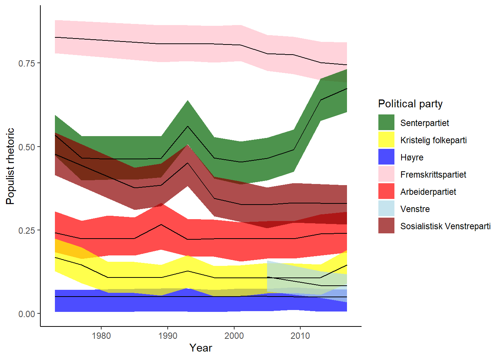
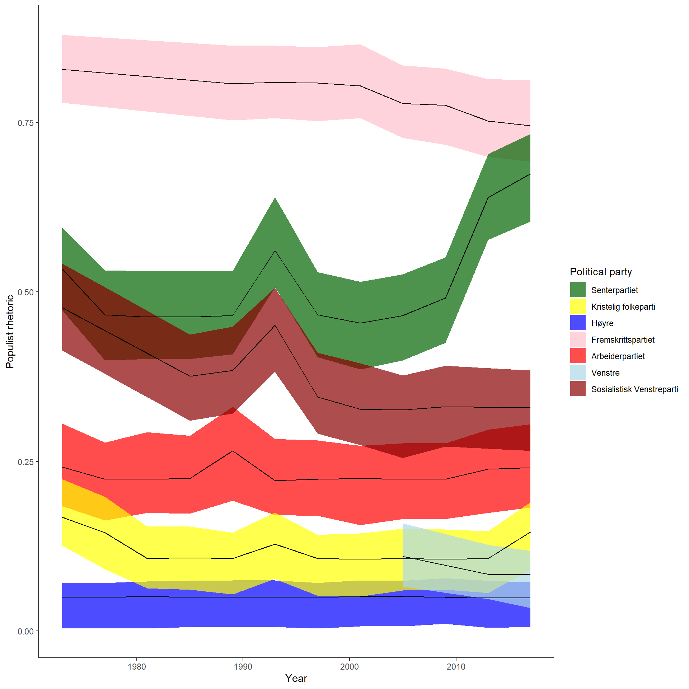

```{r}
print("hello world")
```[1] "hello world"To write up your solutions to the weekly challenges (and for most of your writing, really!), you should use the Quarto publishing system.
Working in Quarto may be different from how you are used to writing documents, e.g. in Microsoft Word. At first, Quarto may seem more challenging. As you work on larger quantitative projects, this type of publishing system is, however, going to prove very useful (we promise!). This is particularly so when our projects also involves large amounts of R code and figures and tables that may need to be updated continuously as the project develops. In the following video, we give you a very brief overview of Quarto and our main motivation for writing our documents in Quarto:
Quarto allows us to integrate the three main components of our projects: (1) our prose, (2) our R code, and (3) the figures and tables our R code produces, in .qmd-files. We then “render” the .qmd-files to produce .pdf, .html, or .docx files that we can share with others.
We will write our prose in plain text and accompany it with simple code that determines the formatting of the document. We can insert chunks of R code which we can run interactively as we work in RStudio, but which we can also set to rerun every time the document is rendered – ensuring that the included output is always up to date. Tables and figures can be produced from these R chunks to be included in the output document automatically. You can create, edit, and render your Quarto documents directly from RStudio.
Below, we illustrate how to create Quarto documents and their main features. Much more extensive documentation of Quarto is available on quarto.org.
The best way to learn about Quarto is to start using it. The best way to start using Quarto is to open a blank document and start writing!
In this video, we provide a quick example of how you create new document, add some content and render it to produce a PDF:
So, to recap briefly, you should:
Click on “New file” in RStudio and select “Quarto Document…”
A new window will open where you can add a title and author to your document (what you write here is not so important, you can change it later) and where you will have to select an output format (html, pdf, or Word). We recommend selecting PDF as this is most likely the most suitable format for your MA thesis or similar documents.1 You will also be able to change the document format later if you regret your choice, so don’t worry too much about it.2
Click “Create Empty Document”. This gives you a blank document (but including the title and author information if you specified those options in the previous step). If you instead click “Create”, you will get a document with some sample content. That’s also fine, you can remove what you don’t need or use it to figure out how various Quarto features work.
You are now ready to start adding some content to your document. You may add some text and some chunks with R code. You may also change how the document looks like in the YAML header. We will discuss these things in more detail later. For now, you may try something very simple. For instance, you may write a document that looks like this:


As you can see, the PDF includes the text we wrote, an echo of our R code – nicely formatted as a code chunk – and the output that the code chunk produces (here simply the “hello world” message). We can change whether the R code and outputs are displayed in the PDF or not. For now the key point is that Quarto allows us to work on our text and code in the same documents.
The code in the beginning of the .qmd file is called the the YAML header. The YAML header is where we provide general information about the document and how it should be formatted. For instance, we may want to add an “author” to the document and to have the date on which the document was rendered printed below the title. If so, we can specify author: and date: in the YAML header. Writing date: today will update the date automatically every time the document is rendered.
So, if we change the YAML header to what we have in the left hand screenshot below, the (top of the) rendered PDF will look like in the right hand screenshot:


Perhaps, we would prefer a different format for the date, if so we can change the format in which the date is printed by specifying date-format in the YAML header. For instance:


You will find more options for how to specify and format the date of your documents here.
We can specify a bunch of other things in the YAML header to customize our document to look how we would like it to look. We will introduce more options as they become relevant.
If you look closely, you will see that there are two editors in RStudio in which you edit your Quarto documents, called “Source” and “Visual”. By default, we are using the “Visual” editor and the line editor: visual in the YAML header tells RStudio to open the documents in the “Visual” editor. The difference between the two is that the visual editor contains buttons for different formatting options and tries to mimic how the text will eventually look like when the document is rendered also in the editor (kind of like Microsoft Word). The source editor only displays the code (but editing using code will be much faster once you get the hang of it!):
We prefer the source editor over the visual editor because code is easier to write and edit. In what follows, we will therefore be using the source editor. However, if you prefer the visual editor, that is perfectly fine. It is also possible to switch back-and-forth between the visual and source editor.
You use simple code to format the text of your document. The following commands are useful for getting started:
#) to create headers in your text. The number of hashtags will determine the position of the header in the hierarchy of headers in your document:

Note that to make the sections numbered, we had to specify that this is what we wanted in the YAML header. We can also turn off the numbering:


*) to put some text in italics. For instance:

**) to make the text bold. For instance:

***) will put the text in italics and make it bold. Let’s do it:

-) to make each bullet point. For this to work, you will need a blank line before you start the list:


[text that we want to appear](url). For instance, we may link to Kieran Healy’s The Plain Person’s Guide to Plain Text Social Science in case some of you want to read his take on why we should use tools such as Quarto to write our documents.3

There are, of course, many more formatting options that you want to use for your text. We will not illustrate all of them here. If you are looking for other formatting options, this page has a nice overview. Moreover, we made this website using Quarto, so if you wonder how to do something that we did somewhere on this website, you may consult our code here.
You can add a new R chunk by clicking the green “Insert a new code chunk” button or by pressing Ctrl+Alt+I/Cmd+Alt+I. Your code chunk will start with ```{r} and end with ```. For instance, we may include an R chunk that just prints “hello world”, like this:
```{r}
print("hello world")
```[1] "hello world"Inside the code chunk, you write R code that will run when you render the document (unless you tell R to not evaluate the R chunk when rendering) and you can run it interactively line-by-line just as you would when working in an R script.
We can set a number of options to our code chunks determining for instance whether the code is evaluated when the code is rendered (eval), whether the echo of the code should be printed in as a code chunk in your output document (echo), whether the output of the code chunk should be included in the document or not (ouput), etc. An overview of the different execution options is available here.
You declare these options at the beginning of the chunk using #| followed by the code for the option you want to set.
Let’s look at some examples (the chunks on the left shows the code as written in our quarto document and the chunks on the left shows the resulting output in our rendered document)
eval to decide whether the code should run when we render the document or not. If we set #| eval: true, the code will run:```{r}
#| eval: true
print("hello world")
```[1] "hello world"print("hello world")[1] "hello world"If we set #| eval: false, it will not run (but an echo of the code will still appear in the document):
```{r}
#| eval: false
print("hello world")
```print("hello world")```{r}
#| eval: true
#| echo: false
print("hello world")
```[1] "hello world"[1] "hello world"echo and eval to false. Maybe we writing a document where we don’t want to show all our code (at least not in the main text) and we also don’t want to rerun the code every time we render the document (maybe it scrapes a website or makes some slow computations. We just want to do those things once and then save the results somewhere). It may still be useful for our workflow to have this code as one or more R chunks in our Quarto documents, but we want to set both echo and eval to false:```{r}
#| eval: false
#| eval: false
#| echo: false
print("hello world")
```output to false:```{r}
#| eval: true
#| output: false
print("hello world")
```print("hello world")Setting output to false may be useful for instance for the code chunk that loads your packages. If we set output to true for the following chunk, it will produce a lot of text that we don’t really need in our documents (not even for an STV4030A assignment!)
```{r}
#| eval: true
#| output: true
library(texreg)
```Version: 1.38.6
Date: 2022-04-06
Author: Philip Leifeld (University of Essex)
Consider submitting praise using the praise or praise_interactive functions.
Please cite the JSS article in your publications -- see citation("texreg").```{r}
#| eval: true
#| output: true
library(rstanarm)
```Loading required package: RcppThis is rstanarm version 2.21.3- See https://mc-stan.org/rstanarm/articles/priors for changes to default priors!- Default priors may change, so it's safest to specify priors, even if equivalent to the defaults.- For execution on a local, multicore CPU with excess RAM we recommend calling options(mc.cores = parallel::detectCores())If we instead set output to false, we can load the packages without printing out all their messages:
```{r}
#| eval: true
#| output: false
library(texreg)
library(rstanarm)
```library(texreg)
library(rstanarm)It also possible to be more specific about what we would want to include or not. For instance, we may want to include most output but to supress the messages that are produced when packages are loaded or to suppress all the messages that stan_glm() produces as it fits models. If so, we can set message to false (even if output is set to true below, the messages from loaded the packages are not included:
```{r}
#| eval: true
#| message: false
#| output: true
library(texreg)
library(rstanarm)
```library(texreg)
library(rstanarm)When using #| to declare execution options a the beginning of a code chunk, what we declare will only apply to this individual chunk. However, it will often be the case that we want the same execution options to apply to all the chunks (or to most of them). If so, it will be inconvenient to have to declare exactly the same executions options for each new chunk!
If you want execution options to apply to the entire documents, you may specify them in the YAML header! The options are same, but you will use the YAML syntax rather than the #|. Consider the following examples:
First, we updated the my_first_quarto.qmd with some new R chunks at the beginning of the document. We are not specifying any execution options, so when rendered we will just get the default options (i.e. the code will be evaluated and echoed, and the output will be included):


Second, we decide that we don’t want to include echoes of the R chunks or any output in our document. We declare these options in the YAML header by including execute: followed by new indented lines with each of the options. Our updated YAML header will then look like this:
execute:
eval: true
echo: false
output: falseIf you compare the .qmd-file and the rendered document, you will see that code and output are no longer included in the document:


Third, we realize that we do want our ASCII cow to be printed (but we still don’t want any other output to be included). We therefore override the ouput option for the chunk that prints the cow. In other words, we keep the YAML header as specified above, but change the execution options for this one chunk to be:
#| output: true
say(motivational_message, "cow")We have now included the cow, but no other output or code echos in our rendered document:


A major advantage of Quarto is that we can create our figures in R chunks and have them be included in our documents. If we change something to our figure, it will automatically be updated when we re-render the document. We discuss how to wrangle the data into the right shape using dplyr here and how make visualizations in ggplot2 here (so if you wonder about the R code, those places are where you should look)]. Here we focus just on the Quarto features.
To illustrate how to include figures, we use data from the Varieties of Democracy’ party-level dataset to plot the the extent to which different Norwegian political parties use “populist rhetoric” over time. The code for creating the figure looks like this:
1Sys.setlocale("LC_ALL", "nb-NO.UTF-8")
2library(dplyr)
library(ggplot2)
3load("../data/vparty.RData")
4norwegian_populism_figure <- vparty %>%
5 filter(country_name == "Norway", year > 1970) %>%
6 mutate(party_name = case_when(v2paenname == "Centre [Agrarian] Party" ~ "Senterpartiet",
v2paenname == "Christian Democratic Party" ~ "Kristelig folkeparti",
v2paenname == "Conservative Party" ~ "Høyre",
v2paenname == "Progress Party [Anders Lange’s Party]" ~ "Fremskrittspartiet",
v2paenname == "Norwegian Labour Party" ~ "Arbeiderpartiet",
v2paenname == "Liberal Party of Norway" ~ "Venstre",
v2paenname == "Socialist Left Party" ~ "Sosialistisk Venstreparti")) %>%
7 ggplot(aes(x = year,
y = v2xpa_popul,
ymin = v2xpa_popul_codelow,
ymax = v2xpa_popul_codehigh,
group = party_name,
fill = party_name)) +
8 geom_ribbon(alpha = 0.7) +
9 geom_line() +
10 scale_fill_manual(name = "Political party",
breaks = c("Senterpartiet", "Kristelig folkeparti",
"Høyre", "Fremskrittspartiet", "Arbeiderpartiet", "Venstre", "Sosialistisk Venstreparti"),
values = c("darkgreen", "yellow", "blue", "pink", "red", "lightblue", "darkred"))+
11 theme_classic()+
12 ylab("Populist rhetoric") +
xlab("Year")dplyr to get functions for wrangling the data and ggplot2 for the functions we use to visualize the data
vparty which we will do something with. The output should be assigned to norwegian_populism_figure
filter() from dplyr to subset the dataset to observations from Norway after the year 1970
mutate() from dplyr we create a new variable party_name. case_when() from dplyr is more elegant than multiple ifelse() when there are many statements in our code for recoding the variable.
ggplot()to start a new plot. Since we are continuing from the pipe (%>%) above, we don’t to specify the data. R will automatically use the data created with the piped operations above, but we need to specify the various aesthetic mappings in our plot using aes(). For instance, we want year to be the variable on the x axis.
geom_ribbon()creates the confidence intervals. The upper limit and lower borders are given by ymax and ymin which we declared inside aes() in the line above. The colors of the different confidence intervals are given by fill which we also declared above. alpha determines how transparent the confidence intervals should be.
geom_line()creates the lines using the aesthetic mappings y, x, and group that we already declared.
scale_fill_manual() can be used to manually change the colors (as well as changing the title of the legend)
theme_classic() removed unnecessary noise from the plot, most notably the grey background and the grid lines.
ylab() and xlab() can be used to change labels on the axes.
The code above assigns the figure to the object norwegian_populism_figure. If we want to include in our Quarto document, we can add an R chunk that prints out the object and allow the output to be included:
```{r}
#| output: true
norwegian_populism_figure
```
We might also want to give the figure a nice caption. If so we can specify the fig-cap execution option:
```{r}
#| output: true
#| fig-cap: The use of populist rhetoric by major Norwegian political parties
norwegian_populism_figure
```If we specify the label execution option and start the label with fig-, the caption will start with figure and the figures will be automatically numbered (automatically updating the numbering the figures is incredibly helpful because we are likely to create more figures, remove some figures, and change the sequence in which they appear. We should not be the ones keeping track of the numbering. That is work for our computer! ).
```{r}
#| output: true
#| label: fig-populism
#| fig-cap: The use of populist rhetoric by major Norwegian political parties
norwegian_populism_figure
```
When figures are labeled we can also cross-reference them in the text using @fig-our-label. So if we want to refer to the figure created below, we would write @fig-populism. For instance, the text in the Quarto document may look like this:
@fig-populism shows that the Fremskrittspartiet has consistently used the most populist rhetoric. However, both Senterpartiet and Sosialistisk Venstreparti used more populist rhetoric during the time of the EU referendum in 1994 and Senterpartiet has started using considerably more populist rhetoric in recent years, making it more similar to Fremskrittspartiet (at least as far as populist rhetoric goes). The text in the rendered document will then look like this:
“Figure 1 shows that the Fremskrittspartiet has consistently used the most populist rhetoric. However, both Senterpartiet and Sosialistisk Venstreparti used more populist rhetoric during the time of the EU referendum in 1994 and Senterpartiet has started using considerably more populist rhetoric in recent years, making it more similar to Fremskrittspartiet (at least as far as populist rhetoric goes)”
Clicking on the label Figure 1 should take you directly to the figure and the numbering will update as needed as you add or remove figures in your document.
We can include the figure again with a different label and it will be included as Figure 2. While we are at it, we might also want change the size of the figure using the fig-width and fig-height options:
```{r}
#| output: true
#| label: fig-new-label
#| fig-cap: The use of populist rhetoric by major Norwegian political parties
#| fig-width: 10
#| fig-height: 10
norwegian_populism_figure
```
As always, there are many more options that can you specify listed in the Quarto documentation!
We can similarly make our tables in R chunks and have them automatically included in our Quarto documents.
Note that there are many different packages that automatize the process of creating different types of tables from tables containing summary statistics to regression tables (suited for different types of regression models). You should never manually create your table by copy-pasting the output from R into a spreadsheet or something similar. This is work your computer should be doing for you! We illustrate how to make various types of tables here.
For now, we will focus on the Quarto syntax for including tables based on R chunks, which we will illustrate by including a small data.frame as a table. Specifically, we will include the populist rheteric score for all Norwegian parties in 1993 (i.e. just prior to the referendum on EU membership). We use the function kable() from the package knitr to create a nice looking table:
1library(knitr)
2vparty %>%
filter(country_name == "Norway", year == 1993) %>%
select(v2paenname, v2xpa_popul) %>%
arrange(v2xpa_popul) %>%
3 kable(col.names = c("Party", "Use of populist rhetoric"))knitr package to just print out a data.frame as a nice table.
data.frame into the shape of the table we want.
kable() function to create the package. The argument col.names allows us to easily change the column names in the table.
| Party | Use of populist rhetoric |
|---|---|
| Conservative Party | 0.050 |
| Christian Democratic Party | 0.128 |
| Norwegian Labour Party | 0.222 |
| Socialist Left Party | 0.451 |
| Centre [Agrarian] Party | 0.561 |
| Progress Party [Anders Lange’s Party] | 0.809 |
Just like with did for the figures, we can adjust the execution options for the R chunk to include a caption, a label that we can use for cross-referencing the table, etc.:
```{r}
#| tbl-cap: Populism score for Norwegian political parties in the year of the 1993 parliamentary election
#| label: tbl-populism
library(knitr) #
vparty %>%
filter(country_name == "Norway", year == 1993) %>%
select(v2paenname, v2xpa_popul) %>%
arrange(v2xpa_popul) %>%
kable(col.names = c("Party", "Use of populist rhetoric"))
```| Party | Use of populist rhetoric |
|---|---|
| Conservative Party | 0.050 |
| Christian Democratic Party | 0.128 |
| Norwegian Labour Party | 0.222 |
| Socialist Left Party | 0.451 |
| Centre [Agrarian] Party | 0.561 |
| Progress Party [Anders Lange’s Party] | 0.809 |
Adding the label @tbl-populism allows us to cross-reference Table 1.
We have showed you have to use the @ symbol to reference figures and tables based on the labels we create using the label execution option. It is also useful to reference other things. For instance, we might want to cross-reference the different sections of our documents.
For instance, we may cross-reference the section we are currently writing by adding {#sec-cross-references} after the section header, so that the full section header is ## Cross-referencing{#sec-cross-references}. We can then refer back to it using @sec-cross-references, which will direct readers back to Section 10.
Quarto knows that we are referring to section, because we started the label with sec-. Somewhat awkwardly it uses the number of the section, even if we have turned off displaying the numbers in the section headers (the numbering is, however, likely to be useful in your MA thesis when the sections will probably be numbered. If you want the first level in the hierarchy of headers to be different “chapters” instead of “sections” (which again, you probably want in your MA thesis), you can add the following code to your YAML header:
crossref:
chapters: trueYou can cross-reference all sorts of elements in your documents. More documentation on how to do so is available here.
You should not make your bibliographies and keep track of what you cite (or what you ended up at the last minute not citing after all) manually. You should use a Quarto to automatically generate the bibliography based on what you cite in your document.
To that you will need a bibliographic data source file, such as a .bib, .bibtex. You can export such a file from most citation managers (like Zotero or whatever you are using). But you can also just open a plain text file in R, grab the BibTeX code for the citation from Google Scholar and save the file as a .bib-file:
Once you have a .bib file, you may include it in your YAML header using bibliography: followed by the name of the .bib file. You can then use @ and the label for the citation in the text of your document. The Quarto document in the screen shot to the left will produce the PDF in the screenshot in the right:


To just include “Shen-Bayh (2018)”, we can just write @shen2018strategies in our document.
Often, we want to have the reference inside a parenthesis, which can do by wrapping the citation in square brackets: [@shen2018strategies] will produce (Shen-Bayh 2018).
We can also add references to specific pages or some leading text in the parenthesis: [see e.g. @shen2018strategies, 334--343] produces (see e.g. Shen-Bayh 2018, 334–43).
Of course we can add multiple citations inside the same parenthesis, e.g. [@shen2018strategies; @shen2022undue] will yield (Shen-Bayh 2018, 2022).
If you consider the list of references at the bottom of this page, you will notice that the two items are formatted differently reflecting that @shen2018strategies refers to an article and @shen2022undue refers to a book. Quarto will know what is what based on the BibTeX code:
@article{shen2018strategies,
title={Strategies of repression: Judicial and extrajudicial methods of autocratic survival},
author={Shen-Bayh, Fiona},
journal={World Politics},
volume={70},
number={3},
pages={321--357},
year={2018},
publisher={Cambridge University Press}
}
@book{shen2022undue,
title={Undue Process: Persecution and Punishment in Autocratic Courts},
author={Shen-Bayh, Fiona},
year={2022},
publisher={Cambridge University Press}
}You will find our .bib-file here.
As always, there is more extensive documentation on how to include citations on the Quarto website.
Rendering your document as a PDF requires a LaTeX installation on your computer. If you don’t already have a LaTeX installation, you can simply install the “tinytex” R package.↩︎
html is also a great format to use, but we are guessing it is not the format you will use for your MA thesis, so for that reason we will emphasize PDFs. If you struggle rendering the document to a PDF, it would, however, be a good idea to render to html instead so that you can get started on your work.↩︎
Healy (2019) discusses an older publishing system called RMarkdown instead of Quarto. The two systems are, however, very similar and all his arguments for using RMarkdown also apply to Quarto.↩︎